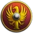

Cada civilizacion cuenta con un arbol tecnólogico unico con el cual se pueden desarrollar diversas estrategias.

Los RomanosVentajas y desventajas de su árbol tecnológico
- Ventajas: cuentan con una infantería muy sólida, reforzada por su bonificación de ataque por edad y unidades como los legionarios y los alabarderos. También disponen de centuriones para apoyar al ejército y de opciones de asedio útiles, como los escorpiones.
- Desventajas: su ejército tiene menos opciones de primer nivel en otros frentes: no pueden entrenar arbalesteros ni paladines. Esto limita su flexibilidad a distancia y su acceso a la caballería pesada más avanzada.